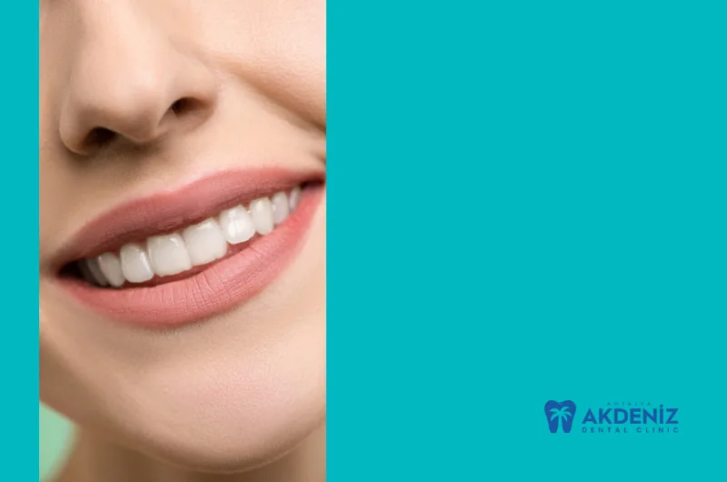

Перекись водорода для отбеливания зубов: Безопасно? Работает?По данным Американской стоматологической ассоциации (ADA), перекись водорода в безрецептурных средствах считается безопасной при концентрации не более 3,5%.Что такое перекись водорода?
Перекись водорода — бесцветная жидкость, химическое соединение, способное распадаться на воду и кислород. Благодаря антисептическим свойствам она широко используется для обработки ран. В стоматологии её применяют в качестве отбеливающего средства, поскольку она способна разрушать пятна на поверхности зубов путём окисления.
Самый безопасный способ применения перекиси водорода для отбеливания зубов — процедура у стоматолога в клинических условиях, а не дома.
Как перекись водорода работает при отбеливании зубов?
Если объяснять механизм действия перекиси водорода при отбеливании зубов простыми словами, её можно сравнить с отбеливателем, который выводит пятна с ткани. Отбеливатель очищает, разрушая молекулы загрязнений в ткани. Перекись водорода делает то же самое, разрушая молекулы пятен на зубах. Однако важное отличие в том, что при использовании под контролем стоматолога перекись водорода делает это, не повреждая зубную эмаль.
- Поверхность зубной эмали имеет пористую структуру, во многом похожую на губку. Со временем в этих порах оседают такие вещества, как кофе, чай, табак и вино. Эти пятна состоят из крупных тёмных молекул.
- При нанесении перекиси водорода на зуб выделяется газообразный кислород. Молекулы кислорода быстро проникают в поры эмали и химически взаимодействуют с накопившимися в порах тёмными молекулами пятен.
- Выделившийся кислород расщепляет крупные тёмные молекулы пятен, превращая их в мелкие светлые молекулы. Эти мелкие молекулы удаляются с поверхности зуба.
- По мере удаления расщеплённых пятен с поверхности зубов зубы возвращают себе естественный цвет. Они выглядят светлее и ярче.
Какие пятна на зубах можно удалить перекисью водорода?
Перекись водорода особенно эффективна против поверхностных пятен, вызванных внешними источниками. Вот виды пятен, которые можно удалить с её помощью:
Пятна на зубах, которые удаляются перекисью водорода:
Пятна от еды и напитков
- Пятна от кофе и чая (самый распространённый тип пятен)
- Пятна от красного вина
- Кола и кислые напитки
- Фруктовые соки (виноградный, гранатовый, вишнёвый)
- Соевый соус и кетчуп
- Тёмные ягоды, например ежевика и черника
Пятна, связанные с привычками
- Сигареты и табачные изделия (никотиновые пятна)
- Пятна от кальяна
- Пятна, связанные с курением трубки
Старение и естественные процессы
- Возрастное пожелтение
- Цвет дентина, проступающий из-за истончения эмали
- Поверхностные пятна, образовавшиеся со временем
Пятна от незначительных травм
- Мелкие царапины и поверхностные повреждения
- Участки незначительной потери минералов
Пятна, которые перекись водорода удаляет частично:
Пятна, связанные с лекарствами
- Лёгкие тетрациклиновые пятна (светло-серые оттенки)
- Пятна, связанные с препаратами железа
- Некоторые ополаскиватели (хлоргексидин)
Пятна при флюорозе
- Лёгкие белые пятна флюороза
- Очень лёгкие коричневые пятна флюороза
Пятна, связанные с развитием зубов
- Лёгкая гипоплазия эмали
- Небольшие белые пятна
Пятна, которые трудно удалить перекисью водорода:
Внутренние (системные) пятна
- Выраженные тетрациклиновые пятна (тёмно-серые/синие)
- Врождённые серые зубы
- Генетические пятна
Травматические пятна
- Пятна в результате серьёзной травмы
- Серое окрашивание из-за гибели нерва
- Пятна на сломанных зубах
Структурные аномалии
- Дисплазии зубов
- Тяжёлый флюороз (коричневый, с ямками)
- Несовершенный амелогенез
Реставрационные материалы
- Изменение цвета из-за металлических пломб
- Окрашивание старых композитных пломб
- Изменение цвета виниров и коронок
Действительно ли работает отбеливание зубов перекисью водорода?
Да, перекись водорода — научно доказанный и эффективный метод отбеливания зубов. Особенно при поверхностных пятнах от кофе, чая, курения или еды перекись водорода проникает в эмаль, расщепляет молекулы пятен пузырьками кислорода и открывает естественный цвет зуба. При правильной концентрации и профессиональном применении она может осветлить зубы на 3–8 тонов.
Однако результаты зависят от типа пятен, структуры зубов и способа применения. Лучших результатов удаётся достичь на зубах с жёлтым оттенком, тогда как на серых или синих оттенках, внутренних пятнах и восстановленных зубах эффект ограничен. Процедуры под контролем стоматолога и эффективнее, и безопаснее, а домашние методы действуют медленнее и дают ограниченный эффект. Следует помнить, что отбеливание помогает зубам вернуть естественный цвет; оно не создаёт искусственной белизны.
Эффективнее ли отбеливание перекисью водорода, чем другие методы?
Ниже приведён ответ на этот вопрос и сравнительная таблица, которую мы подготовили, чтобы помочь вам принять решение.
|
Параметр |
Отбеливание перекисью водорода |
Другие методы отбеливания |
|
Механизм действия |
• Химическое окисление |
• Физическая абразия (пищевая сода) |
|
Уровень эффективности |
Высокий (светлее на 5–10 тонов) |
Низкий–средний (светлее на 0–4 тона) |
|
Когда виден результат |
• Заметен после 1 сеанса |
• Может занять недели/месяцы |
|
Стойкость результата |
• От 6 месяцев до 3 лет |
• 1–6 месяцев |
|
Стоимость |
• Высокая (профессиональное) |
• Низкая (натуральные методы) |
|
Область применения |
• Глубокие пятна |
• Поверхностные пятна |
|
Безопасность |
• Безопасно в контролируемых условиях |
• Неконтролируемое применение |
|
Эффективность по типам пятен |
• Кофе/чай → очень хорошо |
• Поверхностные пятна → средне |
|
Быстрый результат |
Да |
Нет |
Как безопасно использовать перекись водорода для отбеливания зубов
Хотя перекись водорода известна как эффективное средство для отбеливания зубов, крайне важно использовать её правильно и безопасно. Для начала купите в аптеке 3-процентную перекись водорода и перед использованием разведите её водой. Смешайте одну часть перекиси водорода с одной частью воды — этим раствором можно полоскать рот 30–60 секунд. Но будьте осторожны: не проводите эту процедуру чаще 2–3 раз в неделю и ни в коем случае не глотайте раствор. После полоскания обязательно тщательно прополощите рот водой.
Ещё один безопасный способ отбеливания зубов — смешать перекись водорода с зубной пастой. Можно чистить зубы, добавив 1–2 капли 3-процентной перекиси водорода в обычную зубную пасту. Важно не злоупотреблять этим методом — достаточно применять его 1–2 раза в неделю. Чтобы не раздражать дёсны при чистке, используйте мягкие движения и мягкую зубную щётку.
Также можно приготовить мягкую отбеливающую пасту, смешав пищевую соду с перекисью водорода. Смешайте чайную ложку пищевой соды с несколькими каплями перекиси водорода до консистенции пасты. Нанесите эту смесь на зубы, оставьте на 1–2 минуты, а затем аккуратно почистите зубы мягкой щёткой. Этот метод достаточно применять всего раз в неделю: более частое использование может повредить эмаль из-за абразивного действия соды.
Используя перекись водорода, учитывайте возможные побочные эффекты. Самые частые из них — временная чувствительность зубов, раздражение дёсен или жжение. Если вы заметили эти симптомы, немедленно прекратите процедуру и тщательно прополощите рот водой. Никогда не глотайте перекись водорода: попадание её в желудок может вызвать проблемы с пищеварением и серьёзные нарушения здоровья.
Во время и после отбеливания пользуйтесь фторсодержащей зубной пастой, чтобы защитить эмаль. Кроме того, как минимум два часа после отбеливания избегайте продуктов, которые могут окрашивать зубы, таких как кофе, чай, кола или тёмные фрукты. Если вы курите, постарайтесь не курить сразу после отбеливания, так как это может снова окрасить зубы.
Перед тем как начать отбеливание зубов перекисью водорода, настоятельно рекомендуется проконсультироваться со стоматологом. Стоматолог оценит, позволяет ли состояние ваших зубов и дёсен провести эту процедуру, и порекомендует наиболее подходящий способ применения. Помните: здоровые зубы всегда важнее белых, и никакое отбеливание не ценнее здоровья ваших зубов.
Как наносится отбеливающий гель с перекисью водорода?
Сначала подготовка и безопасность
Перед нанесением любого отбеливающего геля правильная подготовка крайне важна как для безопасности, так и для эффективности. Начните с тщательной чистки зубов щёткой и нитью, чтобы удалить поверхностный налёт. Подготовьте место для отбеливания с зеркалом и вымойте руки. Если вы используете индивидуальные капы, убедитесь, что они чистые и сухие. Людям с чувствительными зубами стоит за 30 минут до процедуры нанести пасту для профилактики чувствительности. Всегда надевайте прилагаемые перчатки, чтобы защитить руки, и держите под рукой таймер. Важно использовать только гель с перекисью водорода стоматологического класса (обычно 10–35 % для профессионального применения, 3–10 % для домашних наборов) и избегать любых технических продуктов.
Правильная техника нанесения геля
Способ нанесения зависит от вашей системы отбеливания. Для индивидуальных кап: выдавите небольшое количество геля размером с горошину в ячейку каждого зуба, не переполняя её. Для полосок: точно совместите покрытую гелем полоску с линией зубов. При использовании аппликаторов-кисточек наносите тонкий ровный слой, держа губы и дёсны сухими. Золотое правило: «меньше — значит лучше» — излишки геля могут вытекать и раздражать дёсны. Для равномерного отбеливания следите, чтобы гель покрывал только переднюю поверхность зубов от клыка до клыка.
Рекомендуемая длительность и частота
Строго соблюдайте рекомендации по времени. Большинство безрецептурных средств рассчитаны на 30–60 минут, а при профессиональных процедурах могут рекомендоваться более короткие периоды. При первом применении начните с минимального рекомендованного времени, чтобы оценить чувствительность. Обычная частота — раз в день в течение 7–14 дней, хотя некоторые профессиональные гели высокой концентрации могут применяться реже. Никогда не превышайте 45 минут для домашних наборов и не спите с отбеливающими капами, если они не предназначены специально для ночного применения. Регулярность важнее, чем продолжительность нанесения.
Уход и очистка после процедуры
Сняв капы или полоски, аккуратно удалите излишки геля с зубов и дёсен мягкой салфеткой. Тщательно прополощите рот водой, затем подождите 30 минут, прежде чем есть или пить. Как минимум 2 часа избегайте красящих продуктов, таких как кофе, чай или красное вино. Промойте капы прохладной водой и мягкой зубной щёткой и храните их в футляре. Для поддержания результата многие стоматологи рекомендуют на протяжении всего курса отбеливания пользоваться пастой для чувствительных зубов и избегать сильно пигментированных продуктов.
Решение частых проблем
При появлении чувствительности сразу сократите время или частоту нанесения. При раздражении дёсен в следующий раз нанесите вазелин в качестве барьера. Если вы заметили неравномерное отбеливание, распределяйте гель в капах лучше. Если гель случайно попал на дёсны, сразу прополощите рот водой. При стойкой чувствительности перейдите на гель меньшей концентрации или применяйте его через день. Если вы испытываете сильный дискомфорт или жжение, немедленно прекратите применение и обратитесь к стоматологу.
Какие побочные эффекты бывают при отбеливании зубов перекисью водорода?
Чувствительность зубов:
Чаще всего перекись водорода вызывает чувствительность зубов. При употреблении холодной, горячей, сладкой или кислой пищи ощущаются покалывание и дискомфорт. Это связано с повышенной проницаемостью эмали и раздражением нервных окончаний. Обычно это временно, но в некоторых случаях может длиться несколько дней.
Раздражение дёсен:
Контакт отбеливающего геля с дёснами может вызывать раздражение. Возможны покраснение, отёк, жжение и в редких случаях химические ожоги. Этот риск возрастает при использовании средств высокой концентрации и длительном применении. У людей с рецессией дёсен риск выше.
Эрозия эмали:
Чрезмерное или частое использование может вызывать микротрещины и эрозию эмали. Из-за этого зубы выглядят более жёлтыми, повышается их чувствительность и восприимчивость к кариесу. Риск потери эмали ещё больше возрастает при сочетании с абразивами, такими как пищевая сода.
Неравномерность цвета:
Отбеливание может приводить к пятнистости или неоднородному виду, особенно на зубах с пломбами, коронками или флюорозом. Поскольку пломбы и коронки не отбеливаются, возможно несоответствие цвета. Это может привести к неудовлетворительному эстетическому результату.
Временное изменение вкуса:
Во время процедуры контакт перекиси водорода со вкусовыми сосочками может вызывать временное изменение вкуса или металлический привкус. Обычно это длится несколько часов, но у чувствительных людей может сохраняться дольше. При повреждениях слизистой полости рта может усиливаться жжение.
Риск повреждения пульпы:
Использование перекиси водорода высокой концентрации может вызывать временное или необратимое повреждение пульпы (нерва) зуба. Это может приводить к сильной боли, нарушениям кровоснабжения и в редких случаях к необходимости лечения каналов. У людей с тонкой эмалью этот риск выше.
Кому не следует отбеливать зубы перекисью водорода?
Беременным и кормящим женщинам:
Во время беременности и кормления грудью отбеливание зубов категорически не рекомендуется. Поскольку из-за гормональных изменений чувствительность дёсен может повышаться, перекись водорода может вызвать раздражение или инфекцию дёсен. Кроме того, из-за возможности попадания отбеливающих веществ в грудное молоко в этот период от процедуры следует отказаться.
Людям с заболеваниями дёсен:
При активном воспалении дёсен (гингивите) или пародонтите перекись водорода может спровоцировать химические ожоги, кровоточивость и боль в дёснах. Сначала нужно завершить лечение дёсен, а об отбеливании думать только после одобрения стоматолога.
Людям с повышенной чувствительностью зубов:
У людей, испытывающих сильную боль при употреблении холодной/горячей пищи, перекись водорода может раздражать нервные окончания, вызывая невыносимую боль. Таким людям сначала следует укрепить структуру зубов с помощью процедур, снижающих чувствительность (фторирование, пломбирование).
Людям с обширным кариесом или эрозией эмали:
В зубах с кариесом перекись водорода может достигать пульпы (нерва зуба), вызывая воспаление или необратимое повреждение. В зубах с эрозией эмали отбеливающий гель делает дентин чрезмерно чувствительным. Сначала нужно вылечить кариес и восстановить участки с потерей эмали.
Людям с большим количеством пломб/покрытий:
Отбеливание неэффективно у людей с большими композитными пломбами, керамическими винирами или коронками на передних зубах. Отбеливаются только естественные ткани зуба, из-за чего вид получается «пятнистым». В этом случае может потребоваться замена покрытий.
Людям младше 18 лет:
Поскольку у детей и подростков формирование эмали ещё не завершено, перекись водорода может вызвать необратимое повреждение эмали и нервной ткани. Кроме того, полость пульпы у них большая, что создаёт высокий риск боли.
Людям, склонным к аллергии:
У людей с аллергией на перекись водорода или вспомогательные вещества в отбеливающих гелях возможны тяжёлые реакции (отёк губ, одышка). Особенно осторожными следует быть людям с астмой и экземой.
Отбеливание зубов перекисью водорода: частые вопросы
Нужен ли осмотр у стоматолога перед отбеливанием зубов перекисью водорода?
Да, предварительный осмотр у стоматолога совершенно необходим. Кариес и проблемы с дёснами нужно вылечить.
Безопасна ли перекись водорода для отбеливания зубов?
Да, она безопасна при использовании под контролем стоматолога и в подходящей концентрации (3–10 %). Однако бесконтрольное применение дома рискованно.
Усиливают ли эффект биологически активные добавки?
Добавки с кальцием и фтором поддерживают здоровье эмали, но напрямую эффект отбеливания не усиливают.
Насколько эффективно сочетание пищевой соды и перекиси водорода для отбеливания зубов?
Сочетание пищевой соды и перекиси водорода может дать умеренное поверхностное отбеливание, но при неправильном применении сопряжено со значительными рисками. Мягкие абразивные свойства соды помогают удалять поверхностные пятна от кофе, чая или табака, а перекись водорода действует как отбеливающее вещество, расщепляя более глубокое окрашивание. Однако чрезмерное или частое использование может разрушать эмаль, приводя к постоянной чувствительности и повышенной уязвимости к кариесу.
Стоматологи часто предостерегают от применения без контроля специалиста, так как абразивная сода со временем может стирать эмаль, а перекись водорода в высокой концентрации может раздражать дёсны или вызывать химические ожоги. В качестве более безопасной альтернативы рекомендуются отбеливание под контролем стоматолога или средства, одобренные ADA, — так можно добиться желаемого результата без вреда для здоровья полости рта.
Сколько держится эффект отбеливания зубов перекисью водорода?
От 6 месяцев до 2 лет. На срок влияют кофе, чай, курение и гигиена полости рта.
Чем отбеливание перекисью водорода отличается от альтернативных методов?
Перекись водорода отбеливает химически, а другие методы (сода, активированный уголь) обеспечивают механическую очистку. Действие перекиси водорода глубже и стойче.